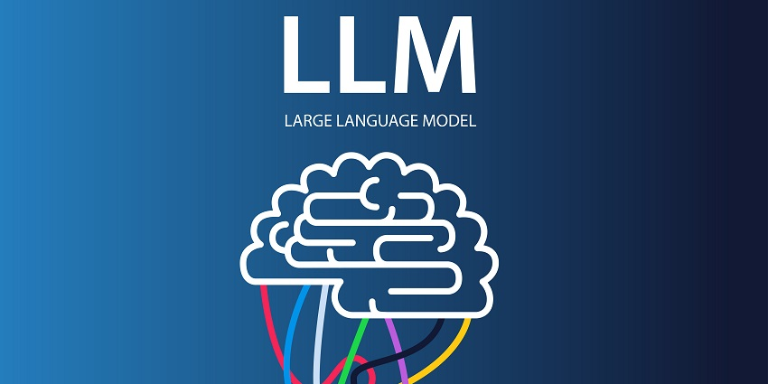

RESEARCH · AI SECURITY

Frontier LLMs for Cyber Operations
A self-authored comparative study of Claude, GPT-5, and Gemini for SecOps — mapped across MITRE ATT&CK and ATLAS. Argues a capability-vs-policy gap and a "defender-as-target" paradox: every defensively-deployed LLM is itself a documented attack surface.